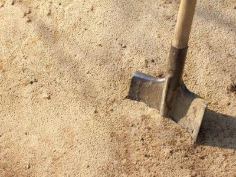
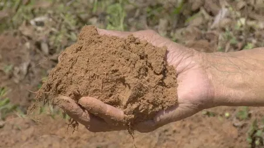
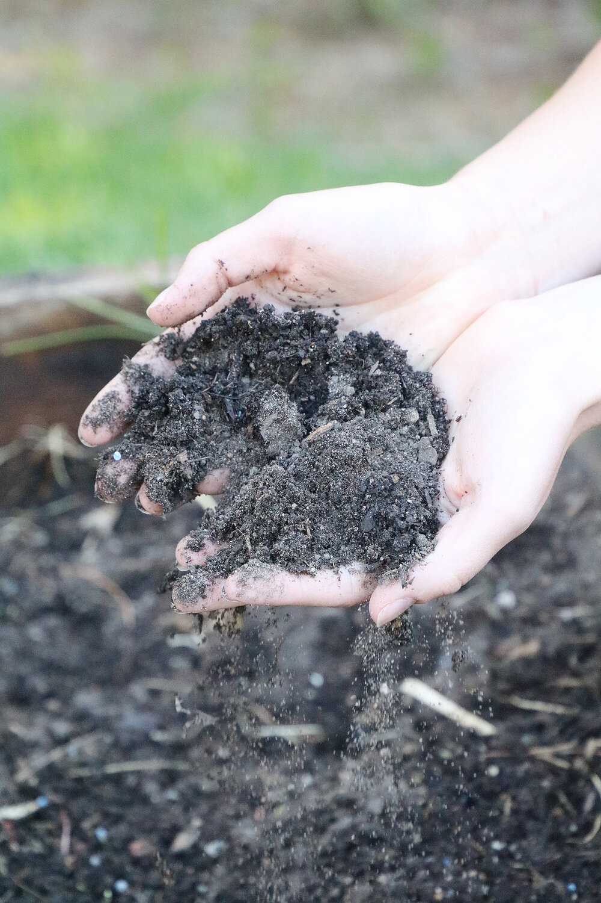
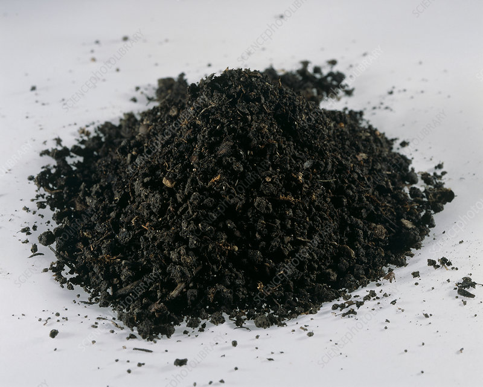

Sandy Soil
Sandy soils are one of the poorest types of soil for growing plants because it has
very low nutrients and poor water holding capacity, which makes it hard for the
plant’s roots to absorb water. This type of soil is very good for the drainage
system. Sandy soil is usually formed by the breakdown or fragmentation of rocks
like granite, limestone and quartz.
SOILS
Type of Soils


Silt Soil
Silt have much smaller particles compared to sandy soil and made up of rock and
other mineral particles, which are smaller than sand and larger than clay. It is
the smooth and fine quality of the soil that holds water better than sand. Silt
is easily transported by moving currents and it is mainly found near the river,
lakes and other water bodies. The silt soil is more fertile compared to the other
three types of soil.

Clay Soil
Clay is the smallest particle among the other two types of soil. The particles in
this soil are tightly packed together with each other with very little or no
airspace. This soil has very good water storage qualities and makes it hard for
moisture and air to penetrate into it. It is very sticky to the touch when wet but
smooth when dried. Clay is the densest and heaviest type of soil which does not
drain well or provide space for plant roots to flourish.

Loam Soil
It is a combination of sand, silt and clay such that the beneficial properties of
each are included. For instance, it has the ability to retain moisture and
nutrients; hence, it is more suitable for farming. This soil is also referred to
as agricultural soil as it includes an equilibrium of all three types of soil
materials, being sandy, clay, and silt, and it also happens to have humus. Apart
from these, it also has higher calcium and pH levels because of its inorganic origins.